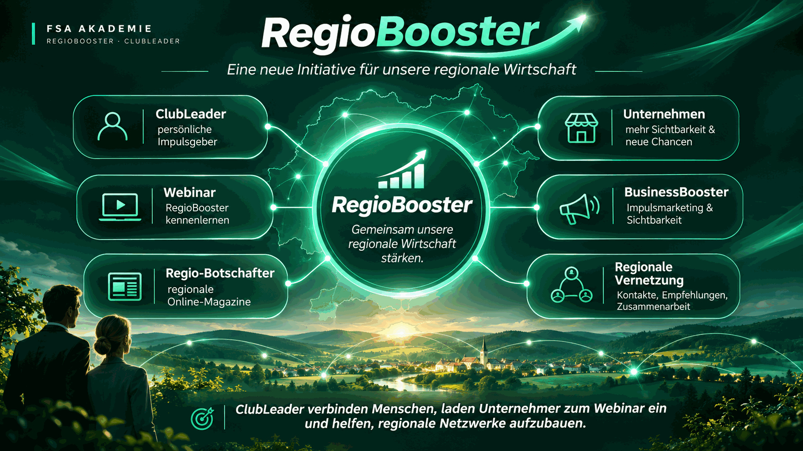

Gesehen werden
Gute Produkte und Leistungen verdienen Aufmerksamkeit – auch über den eigenen bestehenden Kundenkreis hinaus.
Gemeinsam unsere regionale Wirtschaft stärken.
Eine starke Region beginnt mit Menschen, die etwas bewegen. Wir bringen Unternehmer ins Gespräch, schaffen Verbindungen und öffnen den Blick für neue wirtschaftliche Möglichkeiten. Unsere ClubLeader können diesen Aufbruch von Anfang an mitgestalten.
In unseren Regionen leisten Unternehmer Tag für Tag wertvolle Arbeit. Doch zusätzliche Sichtbarkeit, neue Kundenkontakte und verlässliche regionale Verbindungen entstehen nicht immer von allein. Genau hier setzt unsere Initiative an.
Gute Produkte und Leistungen verdienen Aufmerksamkeit – auch über den eigenen bestehenden Kundenkreis hinaus.
Wer andere Unternehmer kennenlernt, entdeckt mögliche Kooperationspartner, Empfehlungen und neue Geschäftskontakte.
Ein gemeinsamer Impuls kann Anstoß geben, über neue Wege der Sichtbarkeit und Zusammenarbeit nachzudenken.
Eine Region wird stärker, wenn aus einzelnen Kontakten gemeinsame Chancen entstehen.
Wir öffnen Türen für persönliche Gespräche und gegenseitiges Kennenlernen.
Wir machen konkrete Angebote und regionale Möglichkeiten verständlich zugänglich.
Jeder ClubLeader kann in seinem Umfeld beginnen – ohne eine große Organisation vorauszusetzen.
Hinter diesem Reiter öffnet sich die RegioBooster-Vision als großes Bild. Es zeigt das Zusammenspiel von ClubLeadern, Unternehmern, Webinar, Sichtbarkeit, Medien und regionaler Vernetzung.

RegioBooster ist kein neues Verkaufsprodukt. Es ist die Initiative, unter deren Leitgedanken sich Menschen, Angebote und regionale Medienmöglichkeiten ergänzen können.
„Gemeinsam unsere regionale Wirtschaft stärken“: Unternehmer miteinander ins Gespräch bringen, regionale Kontakte fördern und die vorhandenen Möglichkeiten sichtbar machen.
Ein Fullservice-Angebot für einzelne Unternehmen rund um Sichtbarkeit und Impulsmarketing. Es wird im Webinar als eine konkrete Möglichkeit vorgestellt.
Selbstständige Herausgeber eigener regionaler oder branchenspezifischer Online-Magazine. Sie können mit ihren Medien zusätzliche Sichtbarkeitsmöglichkeiten schaffen.
Die Initiative ist ein gemeinsamer Rahmen. Der tatsächliche Nutzen ergibt sich aus persönlichen Kontakten, passenden Angeboten und dem Engagement vor Ort.
Neue Sichtbarkeitsmöglichkeiten kennenlernen, Kontakte erweitern und zusätzliche Chancen für Nachfrage oder Zusammenarbeit prüfen.
Unternehmer näher zusammenbringen, regionale Empfehlungen ermöglichen und eine Kultur der gegenseitigen Aufmerksamkeit unterstützen.
Eine klare, sinnvolle Aufgabe übernehmen, Beziehungen aufbauen und bei passenden Angeboten die Möglichkeiten des bestehenden ClubLeader-Geschäftsmodells nutzen – ohne Erfolgsversprechen.
Ein gutes Angebot allein garantiert noch keine Aufmerksamkeit. Sichtbarkeit kann helfen, das Leistungsangebot über bestehende Kundenbeziehungen hinaus bekannt zu machen.
Welche Unternehmen in Ihrer Region könnten von zusätzlicher Sichtbarkeit profitieren?
Persönliche Gespräche schaffen Verständnis, Vertrauen und Gelegenheiten zum Austausch. Daraus können Empfehlungen und mögliche Kooperationen entstehen.
Welche zwei Unternehmen könnten sich in Ihrem Umfeld sinnvoll ergänzen?
Der ClubLeader setzt den persönlichen Impuls und lädt interessierte Unternehmer zum Webinar ein. Er muss das gesamte Konzept nicht selbst präsentieren.
Mit welchem Unternehmer würden Sie zuerst persönlich sprechen?
Das Webinar schafft einen gemeinsamen Ort zur Vorstellung der Initiative und ihrer Möglichkeiten. Die Durchführung übernehmen ausgebildete ClubLeader.
Welchen Nutzen würden Sie einem Unternehmer nennen, damit er sich Zeit für das Kennenlernen nimmt?
Eigenständige regionale Magazine können Unternehmen eine zusätzliche Bühne für ihre Themen bieten. Regio-Botschafter betreiben diese Medien als selbstständige Herausgeber.
Welche Branchen oder Geschichten aus Ihrer Region verdienen mehr Aufmerksamkeit?
Jeder ClubLeader kann mit persönlichen Gesprächen beginnen. Wenn weitere Menschen den Gedanken aufgreifen, können auch in anderen Regionen neue Verbindungen entstehen.
Was wäre ein guter erster Schritt, um die Initiative in Ihrem Umfeld bekannt zu machen?
Ihr Beitrag ist persönlich und konkret. Sie wecken Interesse, ermöglichen die Einladung und schaffen die Verbindung zum Webinar. Niemand muss dafür erst selbst Webinar-Sprecher werden.
Sprechen Sie Unternehmer persönlich an und stellen Sie den Grundgedanken der RegioBooster-Initiative vor.
Erklären Sie kurz, warum regionale Sichtbarkeit und neue Verbindungen interessant sein könnten.
Nutzen Sie den vereinbarten KMS-Prozess: erst Einwilligung mit bestätigtem Double-Opt-in, danach die eigentliche Einladung.
Ausgebildete ClubLeader präsentieren das Webinar. Sie bleiben persönlicher Ansprechpartner für interessierte Unternehmer.
Verbindlich: ClubLeader dürfen zum Webinar einladen. Das Webinar selbst sprechen ausschließlich dafür ausgebildete ClubLeader. Es werden keine Einladungen direkt über diese Seite versendet.
Unser Ziel ist kein unpersönliches Massenprogramm. Wir denken in Begegnungen: ein Unternehmer nach dem anderen, eine Region nach der anderen. Wie weit die Initiative wächst, bestimmen die Menschen, die sich einbringen.
Werden Sie Teil unserer RegioBooster-Initiative. Beginnen Sie mit einem persönlichen Gespräch, laden Sie zum Webinar ein und helfen Sie mit, Unternehmer in Ihrer Region zusammenzubringen.
Konzeptvorschau für ClubLeader · Noch keine Einbindung in die Werkstatt · Keine externe Verlinkung